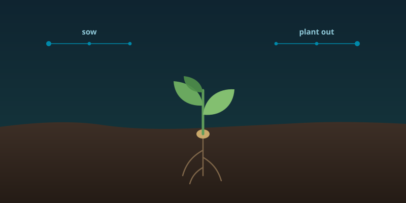

Mendel's GardensWork in progress
A seed germination reference: published propagation protocols turned into structured, ordered steps, and those steps turned into real sowing and plant-out dates.
Actively being built — expect rough edges.